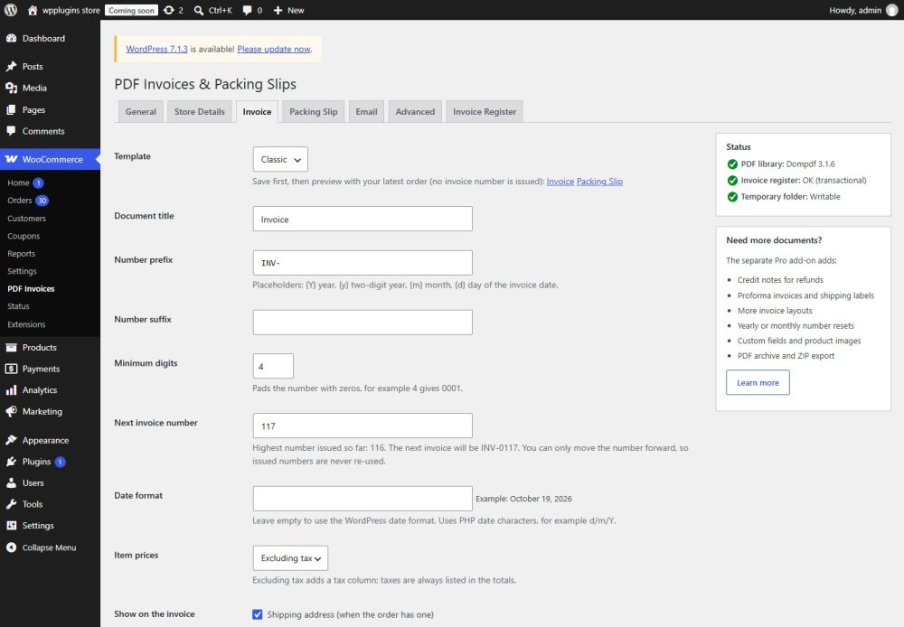
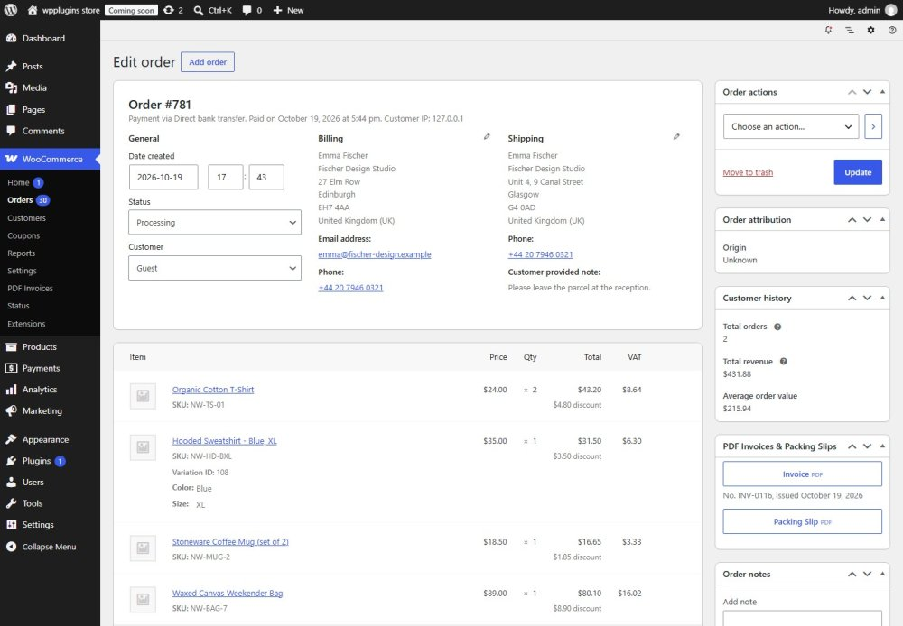

Getting started
Install the plugin, add your store details and create your first invoice in a few minutes.
1. Install
- Install WooCommerce if it is not active yet. Without WooCommerce the plugin does nothing except show a notice.
- Go to Plugins > Add New, search for BrainlessITC PDF Invoices, then Install and Activate.
- Open WooCommerce > PDF Invoices.
2. Add your store details
On the Store Details tab, choose your logo from the Media Library (PNG or JPEG) and enter your store name, address, email, phone, website and tax / VAT ID. Empty name and address fields fall back to the site title and the WooCommerce store address.
3. Choose your invoice layout and number
On the Invoice tab choose Classic or Modern, the number prefix (for example INV- or INV-{Y}-) and the Next invoice number if you want to continue an existing sequence. Use the Invoice / Packing Slip preview links to check the layout with your latest order — a preview never issues a number.

4. Choose the emails
On the Email tab choose the statuses that issue invoices automatically (Processing and Completed by default), the statuses that allow an invoice at all, and the emails that get the invoice or packing slip attached.
5. Open your first invoice
Open any order: the PDF Invoices & Packing Slips box on the right has the Invoice and Packing Slip buttons. Opening the invoice of an order without a number issues the next number.
